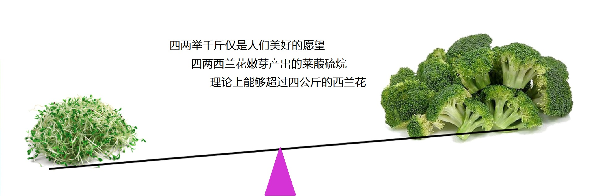
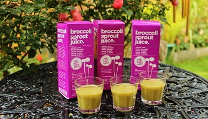

- VEGUS西兰花嫩芽原汁
- 方便而又稳定，VEGUS的西兰花嫩芽原汁是您可信赖的莱菔硫烷来源。请看看下面的说明，您就知道我们所言非虚。
- ￥490.00 / 盒（7支 X 30毫升）
摄取莱菔硫烷为什么要饮用西兰花嫩芽原汁？
而不是直接食用西兰花或者嫩芽？
或者把西兰花嫩芽打浆食用？
或者服用进口的西兰花嫩芽保健品？
VEGUS西兰花嫩芽原汁其实并非像看起来那样简单，背后有充分的科学研究基础。但我们不打算在这里罗列堆砌数据把您吓倒，只是提供最关键的几条。
| 自1992年美国约翰∙霍普金斯大学的Paul Talalay 教授（美国国家科学院院士，美国艺术和科学院院士）首次发现西兰花中主要活性物质是莱菔硫烷分子(SFN)后，已经有近1400多篇科学研究论文发表，超过50项临床实验，涉及到人体健康的多个方面。 | 与其它植物不同，西兰花的独特之处是富含一种莱菔硫烷苷分子（SGS），是莱菔硫烷和糖基结合的化合物。新鲜西兰花的细胞被破碎时，释放出一种芥子酶，可把莱菔硫烷苷分子SGS分解为真正有效的莱菔硫烷分子。煮熟或冰冻都会摧毁芥子酶，导致莱菔硫烷无法生成。因此吃熟或冰冻过的西兰花都不能有效提供莱菔硫烷。 | ||
| 然而即使是合理食用，从西兰花能够获得的莱菔硫烷也很有限。非常保守地估计，要食用一斤以上西兰花，才有可能达到临床研究使用的最小莱菔硫烷摄入量。所幸1997年发现出芽3~5天左右的嫩芽中，莱菔硫烷苷分子的含量是西兰花的20~50倍以上，而且含有丰富的芥子酶；过此之后，莱菔硫烷苷分子的含量急剧下降。在合理处理情况下，西兰花嫩芽是远比西兰花有效的莱菔硫烷来源。 | 常规的食物粉碎机只是比咀嚼能更好地粉碎植物，但并不能有效破碎植物细胞，因此也就不能有效释放出西兰花嫩芽所含的莱菔硫烷苷分子和芥子酶，所生成的莱菔硫烷相当有限。此外氧气能够非常快地破坏莱菔硫烷，而食物粉碎机在打碎过程中带入大量的空气气泡特别不利于莱菔硫烷的保持。因此直接食用或用食物粉碎机处理嫩芽都不是合理方法。 | ||
| 大部分临床研究都使用约翰∙霍普金斯大学实验室特制的西兰花嫩芽提取物，其中莱菔硫烷含量经过测定。这些提取物需要密闭后在零下20度保存和运输，以避免氧气对莱菔硫烷的破坏。因此，仅有少数实验室出于进行临床研究的目的，才能够获得这样的特制提取物。至于目前市场上出售的西兰花嫩芽提取物保健品，如其标签所标示，实际所含的是生理作用很弱但稳定的莱菔硫烷苷分子（SGS）。 | VEGUS采用温和鲜榨方法，不引入空气，而又有效破裂西兰花嫩芽细胞，充分释放出所含的莱菔硫烷苷分子（SGS）和芥子酶，能够将尽可能多的莱菔硫烷苷分子（SGS）转化生成莱菔硫烷。VEGUS在封装环节采用惰性气体保护措施，能最大可能排出原汁中的氧气。随后的HPP超高压处理不仅能够有效灭菌，而且能够钝化原汁中分解莱菔硫烷的酶。因此VEGUS西兰花嫩芽原汁能够有效、便捷、可靠地提供莱菔硫烷。 |